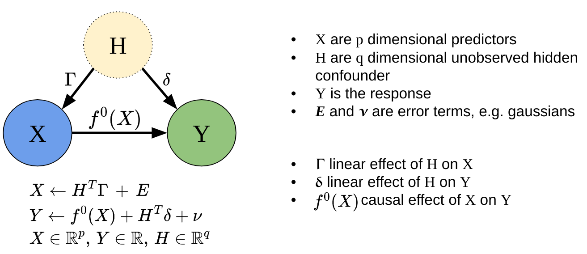
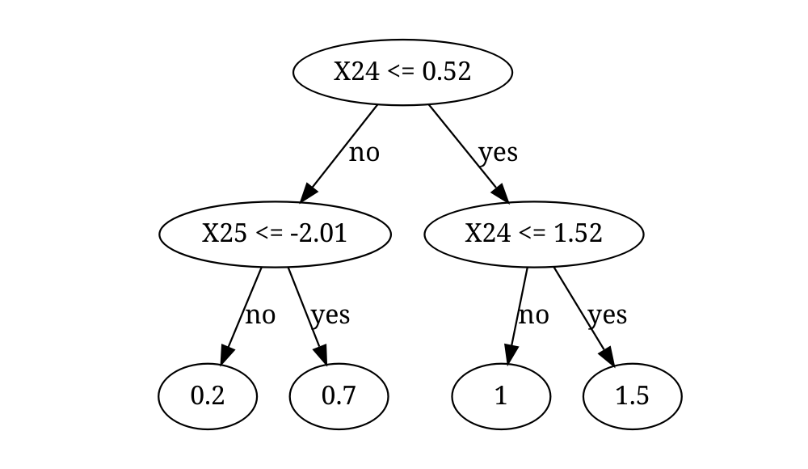

Spectral Deconfounded Random Forests (SDForest) is a method for estimating non-linear sparse causal effects in the presence of unobserved confounding. SDForest has been shown to be a nice estimate for the true causal function in such settings, if we observe many covariates, e.g. high-dimensional setting, and we have fairly sparse confounding. Referenzen SDForest, DDL

Installation
You can install the development version of SDForest from GitHub with:
# install.packages("devtools")
devtools::install_github("markusul/SDForest")Usage
This is a basic example on how to estimate the causal effect of X on Y using SDForest. You can learn more about analyzing sparse causal effects estimated by SDForest in vignette("SDForest").
library(SDForest)
set.seed(42)
# simulation of confounded data
sim_data <- simulate_data_nonlinear(q = 2, p = 50, n = 100, m = 2)
X <- sim_data$X
Y <- sim_data$Y
train_data <- data.frame(X, Y)
# causal parents
sim_data$j
#> [1] 1 47
fit <- SDForest(Y ~ ., train_data)
fit
#> SDForest result
#>
#> Number of trees: 100
#> Number of covariates: 50
#> OOB loss: 0.25
#> OOB spectral loss: 0.15You can also estimate just one Spectral Deconfounded Tree (SDTree) using the SDTree function.
causal_Tree <- SDTree(Y ~ ., train_data, cp = 0.03)
# plot the causal tree
causal_Tree
#> levelName value s j label decision n_samples
#> 1 1 1.3487531 0.04517764 47 X47 <= 0.05 100
#> 2 ¦--1 0.9499773 -1.69331644 47 X47 <= -1.69 no 50
#> 3 ¦ ¦--1 0.3489319 NA NA 0.3 no 7
#> 4 ¦ °--3 0.9859657 -0.04564622 12 X12 <= -0.05 yes 43
#> 5 ¦ ¦--3 0.7622188 NA NA 0.8 no 23
#> 6 ¦ °--6 1.2424454 NA NA 1.2 yes 20
#> 7 °--2 1.7391441 -3.55015330 27 X27 <= -3.55 yes 50
#> 8 ¦--2 1.2038948 NA NA 1.2 no 5
#> 9 °--4 1.7789876 -0.46335890 1 X1 <= -0.46 yes 45
#> 10 ¦--4 1.3813340 NA NA 1.4 no 17
#> 11 °--5 2.0542768 NA NA 2.1 yes 28
plot(causal_Tree)